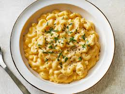

Mac and Cheese

Description
Macaroni and cheese, often abbreviated as mac and cheese, is a classic food that originated in italy but has become a staple in American Cuisine.
It consist of tender macaroni pasta enveloped in a rich, creamy cheese sauce. The dish is typically made by meltin cheddar cheese into a bechamel sauce.
Mac and Cheese can be baked for a crispy topping or served straight from the stovetop for a gooey, indulgent treat. It is beloved for its simplicity,
versatality and nostalogic appeal.
Ingredients
- Macaroni Pasta
- Butter
- All-Purpose Flour
- Milk
- Cheedar Cheese
- Salt
- Pepper
Steps
- Cook The pasta. Boil, Drain and set aside
- Make the Roux: melt the butter over medium heat, once melted add flour and stir constatnly
- Add The milk: Gradually add the milk to the roux, while whisking it continously to prevent lumps.
- Add the cheese: Remove the saucepan from heat and stir in the shredded chedder cheese until it is completely melted.
- Combine: Add the cooked pasta to the cheese sauce and stir until pasta is coated
- Serve: For a baked version transfer to baking dish, top with extra cheese, and bake at 350 F for 20 minutes